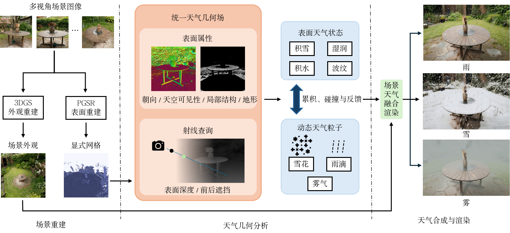
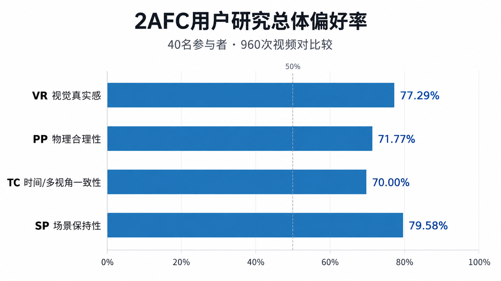
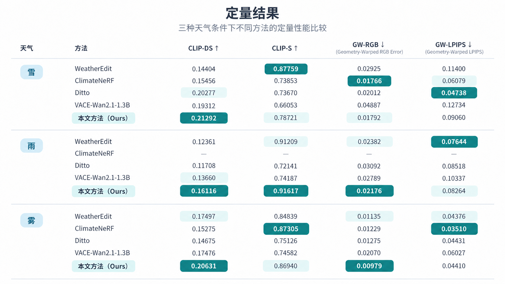

融合动态粒子与表面效应的三维高斯场景多天气可控合成
Controllable Multi-Weather Synthesis for 3D Gaussian Scenes with Dynamic Particles and Surface Effects
摘要
面向虚拟制片与三维内容生成的天气合成任务，需在保持原始场景结构的同时，生成真实、稳定且可控的天气效果。传统工业级天气特效通常依赖人工建模与专用仿真流程，而生成式图像与视频编辑虽能实现显著的天气变化，但在跨视角一致性、表面附着及天气与场景交互方面仍存在不足。针对上述问题，本文提出一种融合三维高斯泼溅与显式表面几何的雪、雨、雾天气合成方法。该方法采用3DGS表示场景外观，结合PGSR恢复显式网格，并根据表面朝向、天空可见性、局部结构与地形高度约束天气分布进行建模；在此基础上生成积雪与积水，模拟雨滴溅落产生涟漪，并结合场景深度与空间密度变化计算雾效。实验在6个室外场景上进行，与基于生成式视频编辑/三维重建的现有天气合成方法相比，所提方法在雪、雨、雾三类天气条件下的CLIP-DS均取得最高值；用户测评的4项评价指标的总体偏好率均超过70%。结果表明，所提方法能够较好地保持场景内容不变性与跨视角一致性，天气合成的真实感、物理合理性与可控性显著提升。

天气模拟结果
不同天气、场景与方法下的生成结果对比
雪 · Garden · 本文方法
可控天气效果
以 Garden 场景为例展示不同天气强度下的合成结果
雪 · 中等强度
用户研究
我们开展了一项包含 40 名参与者的双选强制选择（2AFC）用户研究。参与者观看本文方法与基线方法生成的视频对，并从以下四个维度选择表现更好的结果：
- VR
- 视觉真实感
- PP
- 物理合理性
- TC
- 时间/多视角一致性
- SP
- 场景保持性
每名参与者完成 24 组视频比较，共收集 960 次视频对比较和 3,840 次指标选择。

定量结果
三种天气条件下不同方法的定量性能比较
